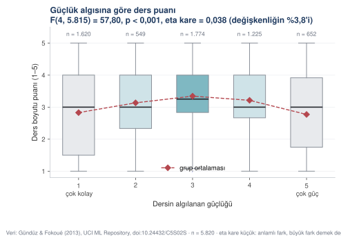
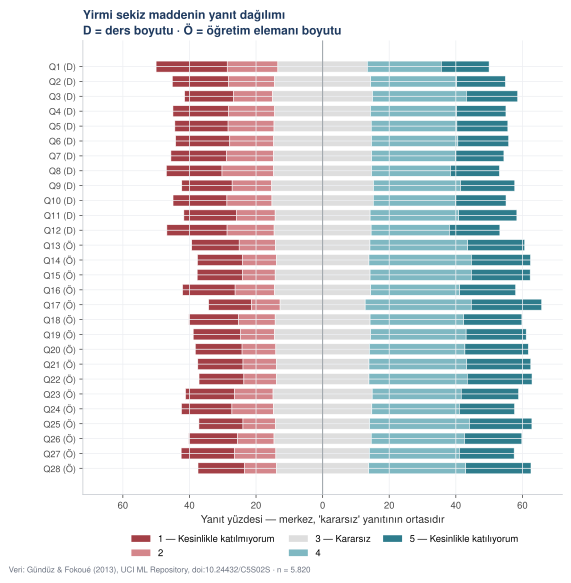
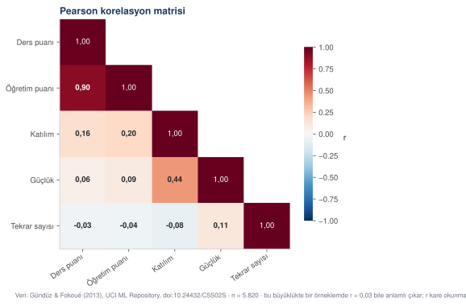
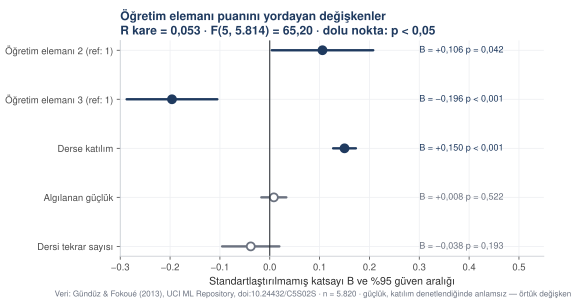
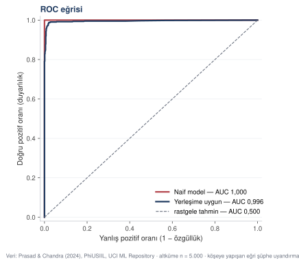
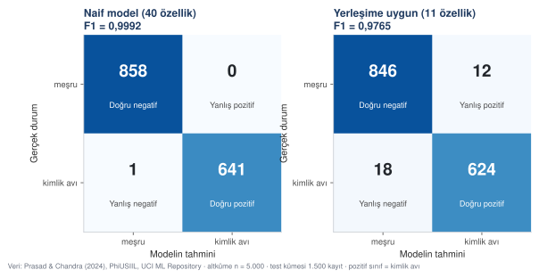

Şekil ve tablo: analiz çıktısından yayına
Bir analiz sonucunun yayın kalitesinde şekle ve tabloya nasıl dönüştüğü. Şekille yanıltmanın yaygın biçimleri ve bunlardan kaçınmanın yolları.
Analiz bitti, elinizde sayılar var. Şimdi bu sayıları okurun anlayacağı bir biçime çevirmek gerekiyor. Bu bölüm, bir analiz çıktısının nasıl yayın kalitesinde şekle ve tabloya dönüştüğünü gösteriyor.
İşin önemli bir kısmı estetik değil, dürüstlük meselesi. Yanıltıcı bir grafik, yanlış bir sayıdan daha etkili yanıltır; çünkü okur grafiğe bakarken sayıyı kontrol etmez.
Şekil mi tablo mu
İkisi aynı işi yapmaz. Hangisini seçeceğiniz, okurun o bilgiyle ne yapacağına bağlıdır.
Tablo kullanın
Okurun sayıyı okuması gerekiyorsa
Okur değeri not alacaksa, başka bir çalışmayla karşılaştıracaksa ya da sizin hesabınızı denetleyecekse tablo gerekir. Regresyon katsayıları, güvenilirlik değerleri, örneklem sayıları hep tabloya girer.
Bir de şu var: tablolar aranabilir. Okuyucu makalenizi PDF olarak açıp "Cronbach" diye arattığında tablodaki değeri bulur, şekildeki değeri bulamaz.
Şekil kullanın
Okurun örüntüyü görmesi gerekiyorsa
Bir eğilim, bir karşılaştırma ya da bir dağılım anlatıyorsanız şekil daha hızlı iş görür. Gözün yakaladığı örüntüyü tablodan okumak zaman alır.
- bölümdeki ters U biçimli ilişki buna iyi bir örnek. Tabloda beş ortalama vardı ve hiçbiri "ters U" demiyordu. Kutu grafiğine bakınca biçim bir saniyede görünüyor.
Yayın kalitesinde şeklin dört kuralı
Her çizgi bir bilgi taşımalı. Bu ilkenin adı veri-mürekkep oranıdır: şekle harcanan mürekkebin ne kadarı veriyi gösteriyor, ne kadarı süs. Arka plan deseni, gölge, üç boyutlu efekt, çerçeve içinde çerçeve. Bunların hiçbiri bilgi taşımaz, hepsi okumayı yavaşlatır. Bir öğeyi sildiğinizde şekil hâlâ aynı şeyi söylüyorsa o öğe gereksizdi.
Etiketi verinin yanına koyun. Açıklama kutusu (legend), okurun gözünü şekille kutu arasında gidip gelmeye zorlar. İki ya da üç seriniz varsa etiketi doğrudan çizginin ucuna yazın. Açıklama kutusu ancak seri sayısı arttığında gerekir.
Eksen sıfırdan başlamıyorsa bunu yazın. Çubuk grafikte eksenin sıfırdan başlamaması farkları olduğundan büyük gösterir. Bazen kesmek gerekir, çünkü 0,97 ile 0,99 arasındaki fark sıfırdan başlayan bir eksende görünmez. O zaman kesmeyi şeklin üstünde açıkça belirtin. 9. bölümdeki Şekil 9.3 bunun örneği.
Yazı tipi metninkiyle aynı aileden olsun. Şekil, makalenin içinde duran bir nesnedir, dışarıdan yapıştırılmış bir resim değil. Bu kursun bütün şekilleri sayfa metniyle aynı yazı tipini kullanıyor.
Analiz çıktısından şekle
Aşağıdaki istem, 8. bölümdeki analiz çıktısından aşağıdaki şekli üretti.
ROL Akademik yayın için şekil hazırlayan bir veri görselleştirme uzmanısın. Tufte'nin veri-mürekkep oranı ilkesini uyguluyorsun. KAYNAK Ekte analiz çıktısı var (JSON). Şekli üreteceğim veri bu dosyada; hiçbir değeri elle girme, hepsini dosyadan oku. ÇİZİLECEK ŞEKİL Beş güçlük düzeyine göre ders puanı dağılımı. Her düzeyde kutu grafiği, üstüne grup ortalamalarını birleştiren bir çizgi. NEDEN BU ŞEKİL ANOVA anlamlı çıktı ama ilişkinin biçimi tablodan okunmuyor. Okurun görmesi gereken şey, ilişkinin doğrusal olmadığı. TASARIM KURALLARI — Beyaz zemin, çerçeve yok, üst ve sağ eksen çizgisi yok — Izgara çizgileri yalnız DEĞER ekseninde, çok açık gri (dikey grafikte yatay çizgi, yatay çubuk grafiğinde dikey çizgi; kategori ekseninde ızgara bilgi taşımaz) — Renk anlam taşısın: en yüksek ortalamalı grup vurgulansın, ötekiler nötr kalsın — Grup büyüklükleri (n) her kutunun üstünde yazsın — Başlıkta test sonucu dursun: F değeri, serbestlik dereceleri, p ve etki büyüklüğü — Şeklin altına veri kaynağı künyesi ve bir okuma notu — Ondalık ayracı virgül, binlik ayracı nokta (Türkçe yazım) — Yunan harfi kullanma; "eta kare" diye yaz (yazı tipi sorunu çıkarıyor) TEKNİK — Python, matplotlib — Çıktı hem SVG (web için) hem PNG 200 dpi (Word için) — Yazı tipi: PT Sans, yedekleriyle birlikte — Kod yorumlanmış olsun, değişken adları Türkçe SINIRLAR — Veride olmayan hiçbir değeri çizme. — Ekseni kesme. Kutu grafiğinde ölçeğin tamamı (1–5) görünsün. — Süsleme ekleme: gölge, gradyan, üç boyut, arka plan deseni yok. — Şekli "güzelleştirmek" için veriyi yuvarlama ya da gruplama. DENETİM Kodun sonunda şekildeki grup ortalamalarını ekrana bas. Bu değerlerin JSON dosyasındaki değerlerle aynı olduğunu karşılaştırabileyim.
ROL Akademik yayın için şekil hazırlayan bir veri görselleştirme uzmanısın. Tufte'nin veri-mürekkep oranı ilkesini uyguluyorsun. KAYNAK sosyal_analiz.json — "anova" bloğu. Beş güçlük düzeyi için grup büyüklükleri, ortalamalar ve standart sapmalar; F değeri, serbestlik dereceleri, p ve eta kare. Ham puanlar gazi_ders_degerlendirme.csv'de. ÇİZİLECEK ŞEKİL Beş güçlük düzeyine göre ders puanı dağılımı. Her düzeyde kutu grafiği, üstüne grup ortalamalarını birleştiren bir çizgi. NEDEN BU ŞEKİL ANOVA anlamlı çıktı (F = 57,80, p < 0,001) ama ilişkinin BİÇİMİ tablodan okunmuyor. Okurun görmesi gereken şey, ilişkinin doğrusal olmadığı: orta güçlükteki dersler en yüksek puanı alıyor, iki uç düşük kalıyor. TASARIM KURALLARI — Beyaz zemin, çerçeve yok, üst ve sağ eksen çizgisi yok — Izgara çizgileri yalnız DEĞER ekseninde, çok açık gri (dikey grafikte yatay çizgi, yatay çubuk grafiğinde dikey çizgi; kategori ekseninde ızgara bilgi taşımaz) — Renk anlam taşısın: en yüksek ortalamalı grup (3. düzey) vurgulansın, ötekiler nötr kalsın — Grup büyüklükleri (n) her kutunun üstünde yazsın — Ortalamalar kırmızı eşkenar dörtgenle işaretlensin ve kesikli çizgiyle birleştirilsin — Başlıkta test sonucu dursun: F, serbestlik dereceleri, p ve eta kare — Şeklin altına veri kaynağı künyesi ve bir okuma notu — Ondalık ayracı virgül, binlik ayracı nokta — Yunan harfi kullanma; "eta kare" diye yaz (PT Sans'ta Yunan harfleri yok, PNG çıktısında kutu olarak görünüyor) TEKNİK — Python, matplotlib — Çıktı hem SVG (web için) hem PNG 200 dpi (Word için) — Yazı tipi: PT Sans, yedekleriyle birlikte — Kod yorumlanmış olsun, değişken adları Türkçe SINIRLAR — Veride olmayan hiçbir değeri çizme. — Ekseni kesme. Kutu grafiğinde ölçeğin tamamı (1–5) görünsün. — Süsleme ekleme: gölge, gradyan, üç boyut, arka plan deseni yok. — Şekli "güzelleştirmek" için veriyi yuvarlama ya da gruplama. — Altyazıda nedensel dil kullanma. DENETİM Kodun sonunda şekildeki grup ortalamalarını ekrana bas. Bu değerlerin JSON dosyasındaki değerlerle aynı olduğunu karşılaştırabileyim.



Dört şekil türü, dört istem
Yukarıdaki istem bir kutu grafiği içindi. Aşağıda, kursta kullanılan şekil türlerinden dördünün istemi var — sonuncusu iki şekil birden üretiyor. Hepsi aynı tasarım kurallarını paylaşıyor; değişen, şeklin ne anlatması gerektiği.
Anket dağılımı — ayrışan yığılı çubuk
KAYNAK [veri dosyası] — [n] katılımcı, [k] Likert maddesi, [basamak]'li ölçek. ÇİZİLECEK ŞEKİL Ayrışan yığılı çubuk (diverging stacked bar). Her madde bir satır; yanıt kategorileri yatay olarak yığılı. Merkez, orta kategorinin ortasından geçsin — böylece olumlu ve olumsuz yanıtlar iki yana ayrışır. NEDEN BU ŞEKİL Ortalama tablosu dağılımı gizler. İki uca yığılmış bir dağılım ile ortada toplanmış bir dağılım aynı ortalamayı verebilir. Okurun görmesi gereken şey yanıtların biçimi. TASARIM — Renk düzeni ayrışan olsun: olumsuz uçtan olumlu uca geçen bir dizi, orta kategori nötr gri — Maddeler [sıralama ölçütünüz] göre sıralansın — Yatay eksen yüzde; merkez sıfır — Açıklama kutusu altta, yatay — Madde kodlarının yanına boyut etiketi koy SINIRLAR — Üç boyut, gölge, gradyan kullanma. — Yüzdeleri çubukların içine yazma; [k] madde × [basamak] kategori okunmaz bir sayı yığını üretir. — Eksik veriyi ayrı bir kategori olarak gösterme; yüzdeleri geçerli yanıtlar üzerinden hesapla ve bunu altyazıda belirt. DENETİM Her maddede kategorilerin yüzdeleri toplamı 100 ediyor mu? Bir maddede etmiyorsa hangisi ve neden?
KAYNAK gazi_ders_degerlendirme.csv — 5.820 değerlendirme, 28 Likert maddesi, 5'li ölçek (1 = kesinlikle katılmıyorum, 5 = kesinlikle katılıyorum). Maddelerin boyutu gazi_madde_sozlugu.csv'de: Q1–Q12 ders, Q13–Q28 öğretim elemanı. ÇİZİLECEK ŞEKİL Ayrışan yığılı çubuk. Her madde bir satır; beş yanıt kategorisi yatay olarak yığılı. Merkez, "3 — kararsız" kategorisinin ortasından geçsin. NEDEN BU ŞEKİL Madde ortalamaları 2,93 ile 3,40 arasında toplanıyor; tabloya bakıldığında "herkes kararsız" izlenimi doğuyor. Oysa yanıtlar uçlara yığılmış. Okurun görmesi gereken şey bu. TASARIM — Beş renk, ayrışan düzen: koyu kırmızıdan koyu turkuaza, orta kategori açık gri — Maddeler veri setindeki sırada kalsın (Q1'den Q28'e); boyut yapısı bu sırayla zaten görünüyor — Yatay eksen yüzde, −72 ile +72 arası, merkez sıfır — Açıklama kutusu altta, üç sütun hâlinde — Madde kodunun yanına boyut harfi: (D) ders, (Ö) öğretim elemanı — Yükseklik 8,2 inç; 28 satır sıkışmasın SINIRLAR — Üç boyut, gölge, gradyan kullanma. — Yüzdeleri çubukların içine yazma; 28 × 5 = 140 sayı okunmaz. — Bu veri setinde eksik hücre yok; eksik kategorisi açma. — Maddeleri ortalamaya göre sıralama. Sıralarsan boyut yapısı dağılır ve şeklin ikinci mesajı kaybolur. DENETİM Her maddede beş kategorinin yüzdeleri toplamı 100 ediyor mu?



İlişki matrisi — ısı haritası
KAYNAK [analiz çıktısı dosyası] — korelasyon matrisi, [k] değişken. ÇİZİLECEK ŞEKİL Alt üçgen ısı haritası. Üst üçgen boş bırakılsın; matris simetrik olduğu için aynı bilgiyi iki kez göstermenin anlamı yok. TASARIM — Ayrışan renk ölçeği, merkez sıfırda, −1 ile +1 arası sabit — Her hücreye katsayıyı yaz; koyu zeminde beyaz, açık zeminde koyu yazı — Köşegen 1,00 değerleri ince yazıyla, ötekiler kalın — Değişken adları kod değil okunur Türkçe olsun — Renk ölçeği çubuğu sağda, başlığı "r" SINIRLAR — Renk ölçeğini veriye göre otomatik ayarlama; −1/+1 sabit olsun. Otomatik ölçek, zayıf ilişkileri güçlü gösterir. — Anlamlılık yıldızı koyma; yıldızlar örneklem büyüklüğünü yansıtır, ilişkinin gücünü değil. — Üst üçgeni doldurma. DENETİM Matris simetrik mi? Köşegen 1,00 mı? En güçlü ve en zayıf ilişkileri değerleriyle bas.
KAYNAK sosyal_analiz.json içindeki "korelasyon" bloğu. Beş değişken: ders_puan, ogretim_puan, attendance, difficulty, nb.repeat. Pearson ve Spearman matrisleri ayrı ayrı var; şekil Pearson'ı göstersin. ÇİZİLECEK ŞEKİL Alt üçgen ısı haritası. TASARIM — RdBu_r renk ölçeği, −1 ile +1 arası sabit — Her hücreye katsayıyı virgüllü yaz (0,90 biçiminde) — Mutlak değeri 0,55'i aşan hücrelerde beyaz yazı, ötekilerde koyu — Köşegen 1,00 değerleri ince, ötekiler kalın — Değişken adları: Ders puanı, Öğretim puanı, Katılım, Güçlük, Tekrar sayısı — Renk ölçeği çubuğu sağda, başlığı "r", çerçevesiz SINIRLAR — Renk ölçeğini veriye göre otomatik ayarlama. — Anlamlılık yıldızı koyma. n = 5.820'de neredeyse her ilişki anlamlı çıkıyor; yıldızlar yanıltıcı olur. — Üst üçgeni doldurma. — Altyazıya bir uyarı ekle: bu büyüklükte bir örneklemde r = 0,03 bile anlamlı çıkar, r kare okunmalıdır. DENETİM Matris simetrik mi? Köşegen 1,00 mı? En güçlü (ders–öğretim) ve en zayıf (ders–tekrar) ilişkileri değerleriyle bas.



Model katsayıları — orman grafiği
KAYNAK [analiz çıktısı] — regresyon katsayıları, standart hatalar, güven aralıkları, p değerleri. ÇİZİLECEK ŞEKİL Orman grafiği (forest plot). Her yordayıcı bir satır; katsayı bir nokta, güven aralığı yatay çizgi. Sıfırda dikey bir referans çizgisi. NEDEN BU ŞEKİL Katsayı tablosu okunur ama hangi aralığın sıfırı kestiği gözle görünmez. Orman grafiğinde anlamlı olan ile olmayan bir bakışta ayrışır. TASARIM — Anlamlı katsayılar (p < [eşik]) dolu nokta ve koyu renk; anlamsızlar içi boş nokta ve gri — Sıfır çizgisi koyu ve ince — Her satırın sağına katsayı değeri ve p değeri yazılsın — Yordayıcı adları okunur Türkçe; referans kategorisi belirtilsin — Sabit terim (intercept) grafiğe KONMASIN; ölçeği bozar SINIRLAR — Güven aralıklarını kesme; hepsi tam görünsün. — Katsayıları büyüklüğe göre sıralama; kuramsal sıra daha okunurdur. — Standartlaştırılmamış ve standartlaştırılmış katsayıları aynı grafikte karıştırma. DENETİM Kaç katsayının güven aralığı sıfırı kesiyor? Bu sayı, p < [eşik] olmayan katsayı sayısıyla aynı mı? Aynı değilse nedenini açıkla.
KAYNAK sosyal_analiz.json içindeki "regresyon" bloğu. Model: ogretim_puan ~ attendance + difficulty + nb.repeat + C(instr). Altı katsayı var (sabit terim dahil), her biri için B, SH, t, p ve %95 güven aralığı. ÇİZİLECEK ŞEKİL Orman grafiği. Beş yordayıcı (sabit terim hariç), her biri bir satır. TASARIM — p < 0,05 olanlar dolu lacivert nokta; olmayanlar içi boş gri — Sıfırda dikey referans çizgisi — Her satırın sağına "B = +0,150 p < 0,001" biçiminde etiket; ondalık ayracı virgül, eksi işareti tipografik (−) — Yordayıcı adları: Derse katılım, Algılanan güçlük, Dersi tekrar sayısı, Öğretim elemanı 2 (ref: 1), Öğretim elemanı 3 (ref: 1) — Başlıkta model istatistikleri: R kare, F, serbestlik dereceleri — Sabit terimi grafiğe koyma; değeri 3,127 ve ölçeği bozar SINIRLAR — Güven aralıklarını kesme. — Katsayıları büyüklüğe göre sıralama. — Altyazıda nedensel dil kullanma. "Katılım puanı artırıyor" değil, "katılım ile puan arasında pozitif ilişki". — Altyazıya şu notu ekle: güçlük, katılım denetlendiğinde anlamsızlaşıyor; bu örtük değişken etkisidir. DENETİM Kaç katsayının güven aralığı sıfırı kesiyor? Bu sayı, p < 0,05 olmayan katsayı sayısıyla aynı mı?



Sınıflandırma başarısı — ROC ve karışıklık matrisi
KAYNAK [analiz çıktısı] — [kaç model] için tahmin olasılıkları ve gerçek etiketler. ÇİZİLECEK İKİ ŞEKİL ŞEKİL A — ROC eğrisi Bütün modeller aynı eksende. Köşegen referans çizgisi (rastgele tahmin). Her eğrinin açıklamasında AUC değeri. ŞEKİL B — karışıklık matrisi [kaç model] için yan yana. Her hücrede sayı ve hücrenin adı (doğru negatif, yanlış pozitif, yanlış negatif, doğru pozitif). TASARIM — ROC: eksenler 0–1, kare en-boy oranı, açıklama sağ altta — Karışıklık matrisi: tek renkli ısı haritası, koyu hücrede beyaz yazı — Satır etiketi "Gerçek durum", sütun etiketi "Modelin tahmini" — Her matrisin başlığında model adı ve F1 değeri SINIRLAR — Karışıklık matrisini yüzdeye çevirme; ham sayı daha bilgilendirici. — ROC eğrisini yumuşatma; basamaklı hâli gerçek veriyi gösterir. — Köşeye yapışan bir eğriyi "mükemmel" diye etiketleme; altyazıda bunun denetlenmesi gereken bir işaret olduğunu belirt. DENETİM Karışıklık matrisindeki dört hücrenin toplamı, test kümesi büyüklüğüne eşit mi? Her model için ayrı ayrı bas.
KAYNAK web_guvenligi_analiz.json içindeki "egriler", "naif_model" ve "durust_model" blokları. İki model: naif (40 özellik) ve yerleşime uygun (11 sözcüksel özellik). Test kümesi 1.500 kayıt. Pozitif sınıf = kimlik avı. ÇİZİLECEK İKİ ŞEKİL ŞEKİL A — ROC eğrisi İki model aynı eksende. Köşegen referans çizgisi. Açıklamada AUC değerleri: naif 1,000, yerleşime uygun 0,996. ŞEKİL B — karışıklık matrisi İki model yan yana. Her hücrede sayı ve hücre adı. TASARIM — ROC: eksenler −0,02 ile 1,02, kare en-boy, açıklama sağ altta — Naif model kırmızı, yerleşime uygun lacivert, rastgele tahmin gri kesikli — Karışıklık matrisi: Blues renk ölçeği, koyu hücrede beyaz yazı — Satır etiketi "Gerçek durum", sütun "Modelin tahmini" — Etiketler: meşru / kimlik avı — Her matrisin başlığında model adı, özellik sayısı ve F1 SINIRLAR — Karışıklık matrisini yüzdeye çevirme. — ROC eğrisini yumuşatma. — Naif modelin eğrisini "mükemmel" diye etiketleme. Altyazıya şunu yaz: köşeye yapışan bir ROC eğrisi, kutlanacak bir sonuç değil, denetlenecek bir işarettir. DENETİM Her modelde dört hücrenin toplamı 1.500 ediyor mu?






Birden çok şekli aynı dile getirmek
Bir makalede sekiz şekil varsa ve her biri farklı renk, farklı yazı tipi, farklı eksen biçimi kullanıyorsa okur her şekilde yeniden öğrenmek zorunda kalır. Çözüm, bütün şekillerin tek bir stil dosyasından üretilmesidir.
# sekil_stili.py — her şekil betiği bunu içe aktarır.
# Renk, yazı tipi ve eksen kararları tek yerde durur; birini
# değiştirdiğinizde bütün şekiller birlikte değişir.
LACIVERT = "#1F3A5F" # ana renk, başlıklar
TURKUAZ = "#2E8B9A" # ikincil seri
KIRMIZI = "#B4474E" # uyarı, eşik çizgileri
GRI = "#6B7280" # açıklama ve dipnot
def stil_kur():
plt.rcParams.update({
"figure.facecolor": "white",
"axes.spines.top": False, # üst ve sağ çerçeve
"axes.spines.right": False, # bilgi taşımaz, silinir
"axes.grid": True,
"axes.grid.axis": "y", # ızgara yalnız değer ekseninde
"grid.color": "#EDEFF2", # görünsün ama öne çıkmasın
"legend.frameon": False, # açıklama kutusunun çerçevesi gereksiz
"font.sans-serif": ["PT Sans", "DejaVu Sans", "Arial"],
"svg.fonttype": "none", # SVG'de yazı yazı olarak kalsın
})
def ts(sayi, basamak=3):
"""Sayıyı Türkçe yazım kurallarıyla biçimler: 1234.5 → 1.234,50
Şekil üstündeki her sayı metin olarak okunur; metnin dili
Türkçeyse ondalık ayracı virgül, binlik ayracı nokta olmalıdır.
Python bunun tam tersini yazar, o yüzden ikisini doğrudan
değiştirmek olmaz — biri ötekine dönüşür. Önce binlik ayracı
geçici bir ime alınır.
"""
return (f"{sayi:,.{basamak}f}"
.replace(",", "\x00").replace(".", ",").replace("\x00", "."))Tablo mimarisi
Akademik tablo, elektronik tablo programından kopyalanmış bir hücre yığını değildir. Okunacak biçimde kurulur.
Kaçının
Sık görülen tablo hataları
Her hücrenin etrafında çizgi olması. Gereksiz ondalık basamak (örneğin 3,28571). Aynı sütunda farklı basamak sayısı. Sütun başlığında birim yazmayıp her hücreye birim yazmak. Satırları anlamsız bir sırada bırakmak (örneğin alfabetik). Anlamlılık yıldızlarını (*, **, ***) açıklamadan kullanmak.
Yapın
İşe yarayan tablo
Yalnız yatay çizgi: üstte, başlıktan sonra, altta. Sayıları ondalık noktasına göre hizalayın. Basamak sayısını ölçüm duyarlılığına göre seçin, genellikle üç ondalık yeter. Birimi sütun başlığına yazın. Satırları anlamlı bir büyüklüğe göre sıralayın. Tabloyu metinden bağımsız okunabilir yapın: başlık ne olduğunu söylesin, dipnot kısaltmaları açsın.
ROL Akademik yayın için tablo hazırlıyorsun. Hedef dergi, Amerikan Psikoloji Derneği'nin yedinci baskı yazım kılavuzunu (APA 7) kullanıyor. KAYNAK Ekte çoklu regresyon çıktısı var (JSON): katsayılar, standart hatalar, t değerleri, p değerleri, güven aralıkları, model istatistikleri ve VIF değerleri. GÖREV Bu çıktıdan yayına hazır bir tablo üret. TABLO KURALLARI — Başlık: "Tablo N" ve tablonun ne gösterdiğini söyleyen bir cümle — Sütunlar: Yordayıcı | B | SH | t | p | %95 GA — Değişken adları okunur Türkçe olsun, kod adı değil (örneğin "C(instr)[T.3]" değil, "Öğretim elemanı 3 (ref: 1)") — Üç ondalık basamak, ondalık ayracı virgül — p < 0,001 ise "< 0,001" yaz, bilimsel gösterim kullanma — Referans kategorisini sütun adında belirt — Model istatistikleri (R kare, F, serbestlik dereceleri, n) tablonun altına not olarak — Yıldız kullanacaksan dipnotta açıkla; kullanmaman tercih edilir, p değerleri zaten tabloda ÇIKTI — üç biçim 1. Markdown tablo (bu sohbette okunabilsin) 2. LaTeX kodu (booktabs paketiyle, yalnız yatay çizgi) 3. Word'e yapıştırılabilir sekme ayraçlı düz metin SINIRLAR — Çıktıda olmayan hiçbir sayı yazma. — Yuvarlarken değer değiştirme; üç ondalıkta kes, yeniden hesaplama. — Anlamsız çıkan katsayıları tablodan çıkarma. Hepsi raporlanır. — Tabloyu yorumlama; tablo tablodur, yorum metinde olur. DENETİM Tablodaki satır sayısı, çıktıdaki katsayı sayısıyla eşit mi? Yaz.
ROL
Akademik yayın için tablo hazırlıyorsun. Hedef dergi, Amerikan
Psikoloji Derneği'nin yedinci baskı yazım kılavuzunu (APA 7)
kullanıyor.
KAYNAK
sosyal_analiz.json — "regresyon" bloğu. Altı katsayı (sabit terim
dahil), her biri için B, standart hata, t, p ve %95 güven aralığı.
Ayrıca model istatistikleri (R kare, düzeltilmiş R kare, F,
serbestlik dereceleri) ve VIF değerleri.
GÖREV
Bu çıktıdan yayına hazır bir tablo üret.
TABLO KURALLARI
— Başlık: "Tablo 3" ve tablonun ne gösterdiğini söyleyen bir cümle
— Sütunlar: Yordayıcı | B | SH | t | p | %95 GA
— Değişken adları okunur Türkçe olsun, kod adı değil:
"C(instr)[T.3]" yerine "Öğretim elemanı 3 (ref: 1)"
"Q('nb.repeat')" yerine "Dersi tekrar sayısı"
— Üç ondalık basamak, ondalık ayracı virgül
— p < 0,001 ise "< 0,001" yaz, bilimsel gösterim kullanma
— Referans kategorisini sütun adında belirt
— Model istatistikleri (R kare, F, serbestlik dereceleri, n)
tablonun altına not olarak
— VIF değerleri ayrı sütun olmasın; en yüksek VIF değeri nota
yazılsın
— Yıldız kullanma; p değerleri zaten tabloda
ÇIKTI — üç biçim
1. Markdown tablo (bu sohbette okunabilsin)
2. LaTeX kodu (booktabs paketiyle, yalnız yatay çizgi)
3. Word'e yapıştırılabilir sekme ayraçlı düz metin
SINIRLAR
— Çıktıda olmayan hiçbir sayı yazma.
— Yuvarlarken değer değiştirme; üç ondalıkta kes, yeniden
hesaplama.
— Anlamsız çıkan katsayıları tablodan çıkarma. Güçlük (p = 0,522)
ve tekrar sayısı (p = 0,193) da raporlanır.
— Tabloyu yorumlama; tablo tablodur, yorum metinde olur.
DENETİM
Tablodaki satır sayısı, çıktıdaki katsayı sayısıyla eşit mi? Yaz.Tablo 3. Öğretim elemanı değerlendirme puanını yordayan değişkenlere ilişkin çoklu doğrusal regresyon sonuçları
| Yordayıcı | B | SH | t | p | %95 GA |
|---|---|---|---|---|---|
| Sabit | 3,127 | 0,063 | 50,06 | < 0,001 | [3,004 – 3,249] |
| Derse katılım | 0,150 | 0,012 | 12,90 | < 0,001 | [0,127 – 0,173] |
| Algılanan güçlük | 0,008 | 0,013 | 0,64 | 0,522 | [−0,017 – 0,033] |
| Dersi tekrar sayısı | −0,038 | 0,029 | −1,30 | 0,193 | [−0,096 – 0,019] |
| Öğretim elemanı 2 (ref: 1) | 0,106 | 0,052 | 2,04 | 0,042 | [0,004 – 0,208] |
| Öğretim elemanı 3 (ref: 1) | −0,196 | 0,046 | −4,23 | < 0,001 | [−0,287 – −0,105] |
Not. n = 5.820. R² = 0,053; düzeltilmiş R² = 0,052; F(5, 5.814) = 65,20; p < 0,001. B = standartlaştırılmamış regresyon katsayısı; SH = standart hata; GA = güven aralığı. Çok doğrusallık denetiminde tüm VIF değerleri 2,20'nin altındadır.
DENETİM: Tablodaki satır sayısı 6, çıktıdaki katsayı sayısı 6. ✓
\begin{table}[htbp]
\centering
\caption{Öğretim elemanı değerlendirme puanını yordayan değişkenlere
ilişkin çoklu doğrusal regresyon sonuçları}
\label{tab:regresyon}
\begin{tabular}{lrrrrc}
\toprule
Yordayıcı & $B$ & SH & $t$ & $p$ & \%95 GA \\
\midrule
Sabit & 3,127 & 0,063 & 50,06 & $<$,001 & [3,004--3,249] \\
Derse katılım & 0,150 & 0,012 & 12,90 & $<$,001 & [0,127--0,173] \\
Algılanan güçlük & 0,008 & 0,013 & 0,64 & ,522 & [--0,017--0,033] \\
Dersi tekrar sayısı & --0,038 & 0,029 & --1,30 & ,193 & [--0,096--0,019] \\
Öğretim elemanı 2 (ref: 1) & 0,106 & 0,052 & 2,04 & ,042 & [0,004--0,208] \\
Öğretim elemanı 3 (ref: 1) & --0,196 & 0,046 & --4,23 & $<$,001 & [--0,287----0,105] \\
\bottomrule
\end{tabular}
\vspace{2mm}
\footnotesize
\textit{Not.} $n = 5.820$. $R^2 = 0{,}053$; düzeltilmiş
$R^2 = 0{,}052$; $F(5, 5.814) = 65{,}20$; $p < 0{,}001$.
\end{table}Şekil ve tablo başlıkları
Başlık, şeklin ya da tablonun metinden bağımsız okunmasını sağlar. Okurların çoğu makaleyi baştan sona okumaz; şekillere bakar, ilgisini çekeni metinde arar.
Şekil 3. Sonuçlar. Şekil 4. Model karşılaştırması. Tablo 2. Regresyon analizi.
Şekil 3. Güçlük algısına göre ders değerlendirme puanları. Orta güçlükteki dersler en yüksek puanı almakta, iki uç düşük kalmaktadır (n = 5.820). Şekil 4. Üç farklı özellik kümesiyle eğitilen modelin başarısı. Yalnız URL dizgisinden hesaplanan 11 özellikle F1 = 0,977 elde edilmektedir. Tablo 2. Öğretim elemanı değerlendirmesini yordayan değişkenler. Derse katılım denetlendiğinde algılanan güçlüğün katkısı anlamsızlaşmaktadır.
Şekil ile metnin uyumu
Son adım bir denetim. Metinde yazdığınız her sayı, gönderme yaptığınız şekilde ya da tabloda gerçekten var mı?
KAYNAK Üç şey veriyorum: 1. Makalenin tam metni 2. Bütün tabloların içeriği 3. Şekillerin altyazıları ve her şeklin dayandığı analiz çıktısı GÖREV Metin ile şekil ve tablolar arasındaki her tutarsızlığı bul. ŞUNLARI DENETLE 1. Metinde geçen her sayı, gönderme yapılan tablo ya da şekilde aynı değerle var mı? 2. Metinde "Şekil 3'te görüldüğü gibi" denen yerde Şekil 3 gerçekten bunu gösteriyor mu? 3. Numaralandırma: Şekil 1, 2, 3 diye sırayla mı gidiyor, atlanan var mı? 4. Metinde hiç gönderme yapılmayan şekil ya da tablo var mı? 5. Var olmayan bir şekle gönderme yapılıyor mu? 6. Aynı değer iki ayrı yerde farklı yuvarlanmış mı? (örneğin bir yerde 0,43, başka yerde 0,426) ÇIKTI | Tür | Nerede | Sorun | Doğrusu ne olmalı | SINIRLAR — Yalnız tutarsızlık bildir. Üslup, dil ya da içerik önerisi verme. — Emin olmadığın yerde "doğrulanamadı" yaz, tahmin etme. — Metni düzeltme; sorunu göster, düzeltmeyi bana bırak. DENETİM Sonunda şunları yaz: metinde kaç sayısal değer var, kaçı bir şekil/tabloyla eşleşti, kaçı eşleşmedi.
KAYNAK Üç şey veriyorum: 1. Makalenin tam metni (6.800 kelime) 2. Dört tablonun içeriği 3. Dokuz şeklin altyazıları ve her şeklin dayandığı analiz çıktısı (sosyal_analiz.json) GÖREV Metin ile şekil ve tablolar arasındaki her tutarsızlığı bul. ŞUNLARI DENETLE 1. Metinde geçen her sayı, gönderme yapılan tablo ya da şekilde aynı değerle var mı? 2. Metinde "Şekil 3'te görüldüğü gibi" denen yerde Şekil 3 gerçekten bunu gösteriyor mu? 3. Numaralandırma: Şekil 1, 2, 3 diye sırayla mı gidiyor, atlanan var mı? 4. Metinde hiç gönderme yapılmayan şekil ya da tablo var mı? 5. Var olmayan bir şekle gönderme yapılıyor mu? 6. Aynı değer iki ayrı yerde farklı yuvarlanmış mı? (örneğin bir yerde 0,43, başka yerde 0,426) BU MAKALEYE ÖZGÜ EK DENETİM 7. Revizyon sırasında analiz yeniden koşuldu ve üç değer değişti: Cronbach alfa (0,991 → 0,992), eta kare (0,037 → 0,038) ve Cohen d (0,424 → 0,426). Eski değerlerin metinde kalıp kalmadığını özellikle ara. 8. Ondalık ayracı tutarlılığı: metinde virgül, tablolarda virgül, şekil altyazılarında virgül mü? Bir yerde nokta kaldıysa bul. 9. Serbestlik dereceleri: her test istatistiğinin yanında parantez içinde serbestlik derecesi var mı? ÇIKTI | Tür | Nerede | Sorun | Doğrusu ne olmalı | 7. maddeden çıkan bulguları tablonun en başına koy. SINIRLAR — Yalnız tutarsızlık bildir. Üslup, dil ya da içerik önerisi verme. — Emin olmadığın yerde "doğrulanamadı" yaz, tahmin etme. — Metni düzeltme; sorunu göster, düzeltmeyi bana bırak. DENETİM Sonunda şunları yaz: metinde kaç sayısal değer var, kaçı bir şekil/tabloyla eşleşti, kaçı eşleşmedi? Eski değer kalıntısı kaç tane bulundu?
Bu bölümden alınacaklar
Tablo sayının kendisi içindir, şekil sayılar arasındaki ilişki için. Aynı veriyi ikisine birden koymayın.
Bilgi taşımayan her çizgiyi silin. Bir öğeyi kaldırdığınızda şekil aynı şeyi söylüyorsa o öğe gereksizdi.
Ekseni kesmek bazen gerekir, ama kestiğinizi şeklin üstünde yazın.
Bütün şekilleri tek bir stil dosyasından üretin. Renk paletini bir kez değiştirin, hepsi birlikte değişsin.
Şekil ve tablo başlığı, metinden bağımsız okunabilmeli. Okurların çoğu önce şekillere bakar.
Gönderimden önce metindeki her sayının şekil ya da tabloda bulunduğunu makineyle doğrulayın. En çok hata revizyon sonrası çıkar.
Akademide Üretken Yapay Zekâ — uygulamalı kurs. Hazırlayan: Dr. Mehmet Sevri, Recep Tayyip Erdoğan Üniversitesi. Bu sayfadaki bütün sayısal çıktılar, yanındaki kod ve veri dosyalarıyla yerel olarak üretilmiştir; hiçbiri elle yazılmamıştır.
Kullanılan gerçek veri setleri CC BY 4.0 ile dağıtılmaktadır ve kaynakları ilgili bölümde künyeleriyle verilmiştir. Sentetik veri kullanılan yerler açıkça işaretlenmiştir.
Buradaki istemler ve çıktılar öğretim malzemesidir. Yapay zekâ araçlarının kullanımından doğan hatalardan, uydurma kaynaklardan ve bunların yer aldığı çalışmalardan kurs ve hazırlayanı sorumlu tutulamaz; sorumluluk aracı kullanan araştırmacıya aittir. Sorumluluk ve etik beyanı · Dr. Mehmet Sevri — kişisel sayfa